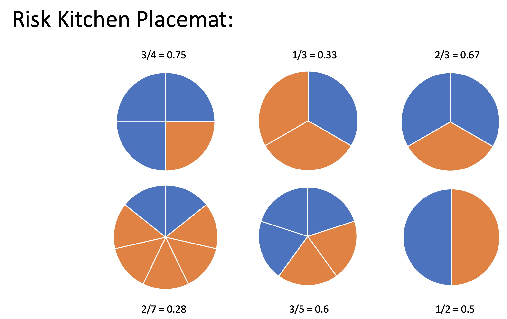
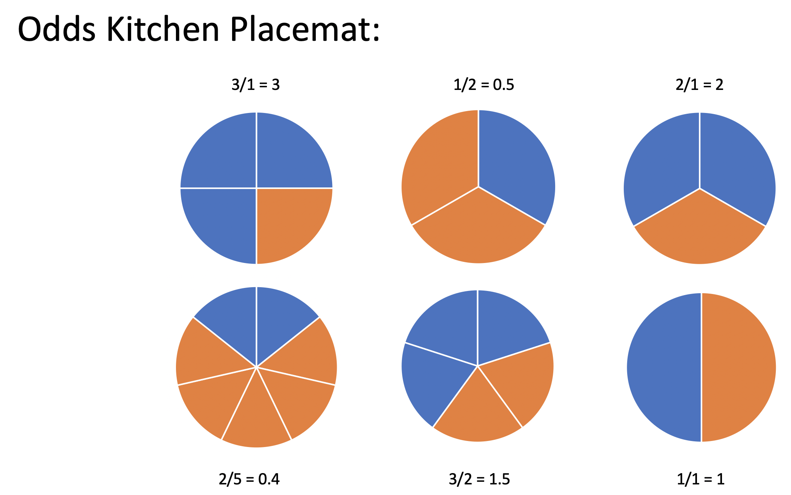

Relative Risk and Odds Ratios
Why relative risk should not be calculated on data sampled using a case control study.
Introduction
There are many good reasons to choose a case control study as the experimental design. Most notably, in many scenarios, cases are somewhat difficult to come by, and if observations are determined by treatment / control (i.e., a cohort study) then the study can end up with too few cases observed for any type of conclusion (i.e., the study will be under-powered). See recent case-control studies here and here and here.
However, when teaching about case-control studies, it is paramount to include a thorough dive into odds ratios and the need to use odds ratios (instead of relative risk or differences in proportions) to summarize case-control studies. There are many good resources for learning about case-control studies (e.g., here and here and here and here and here), but many of the ideas below come from the excellent introductory statistics textbook, Introduction to Statistical Concepts, Applications, and Methods by Chance and Rossman.
Definitions
A case-control study is one in which the observational units are selected in such a way that there are a set number of cases and a set number of controls. (As compared with a cohort study where the observational units are selected in such a way that there are a set number in treatment group 1 and a set number in treatment group 2.)
Types of Studies
Explanatory variable is one that is a potential explanation for any changes in the response variable.
Response variable is the measured outcome of interest.
Case-control study: identify observational units by response (i.e., case or control).
Cohort study: identify observational units by explanatory variable (i.e., treatment or placebo).
Cross-classification study: identify observational units regardless of levels of the variable.
Relative Risk
The relative risk (RR) is the ratio of risks for each group. We say, “The risk of success is RR times for those in group 1 as compared to those in group 2.”
\[ \begin{aligned} \mbox{relative risk} &= \frac{\mbox{risk group 1}}{\mbox{risk group 2}}\\ &= \frac{\mbox{proportion of successes in group 1}}{\mbox{proportion of successes in group 2}}\\ \mbox{RR} &= \frac{p_1}{p_2} = \frac{p_1}{p_2}\\ \hat{\mbox{RR}} &= \frac{\hat{p}_1}{\hat{p}_2} \end{aligned} \]
Odds Ratio
A related concept to risk is odds. It is often used in horse racing, where “success” is typically defined as losing. So, if the odds are 3 to 1 we would expect to lose 3/4 of the time. The odds ratio (OR) is the ratio of odds for each group. We say, “The odds of success is OR times for those in group 1 as compared to those group 2.”
\[\begin{eqnarray*} \mbox{odds} &=& \frac{\mbox{proportion of successes}}{\mbox{proportion of failures}}\\ &=& \frac{\mbox{number of successes}}{\mbox{number of failures}} = \theta\\ \hat{\mbox{odds}} &=& \hat{\theta}\\ \mbox{odds ratio} &=& \frac{\mbox{odds group 1}}{\mbox{odds group 2}} \\ \mbox{OR} &=& \frac{\theta_1}{\theta_2} = \frac{p_1/(1-p_1)}{p_2/(1-p_2)}= \frac{p_1/(1-p_1)}{p_2/(1-p_2)}\\ \hat{\mbox{OR}} &=& \frac{\hat{\theta}_1}{\hat{\theta}_2} = \frac{\hat{p}_1/(1-\hat{p}_1)}{\hat{p}_2/(1-\hat{p}_2)}\\ \end{eqnarray*}\]
Are odds difficult to understand?
If you, like me, grew up in a world of proportions and percentages, the first time you encounter odds, it might seem like an odd statistic. However, I’d like to argue that, fundamentally, the idea of odds is no different from the idea of risk (or proportion). The cognitive difficulty in remembering and communicating about odds comes with the fact that we’ve wired our brains so completely to think primarily about proportions.
But what if you had grown up thinking about odds? What if you had had a placement at your kitchen table describing the odds of an event (instead of the proportion of the event)? You might find that the odds are actually easier to interpret than a proportion.
I posit that if you (or your students) had grown up with a kitchen table placemat as seen in Figure 2, you would find risk to be the odd concept and odds to be the intuitive idea.

Can we force the RR to be anything we want?
The motivation for writing this blog entry came from the Shiny App below. It takes a little bit of thinking, but hopefully we can see that if we select observational units based on cases and controls, the individual risk (per treatment group) is not measurable. Why? Well, if we just keep selecting more cases, the risk in each group will keep going up! (Note: by selecting more cases, the odds will also keep going up.)
What about relative risk and odds ratios? It turns out that with the case-control experimental design the calculation of the relative risk depends on which variable is explanatory and which variable is response. HOWEVER, the calculation of the odds ratio does not depend on which variable is explanatory and which variable is response.
Conclusion Regardless of how many cases or controls are sampled, the odds ratio calculated from data in a case control-study is a good estimate of the population odds ratio.
More thoughts on RR and OR
Odds Ratios are hard to interpret
After an odds ratio (of XXX) has been calculated, the correct interpretation is that the odds of success for group 1 are XXX times the odds of success for group 2. There might be a tendency to say that the probability of success (or risk of success) in group 1 are XXX times that of group 2. But remember, risk and odds are different numbers (see Figure 1 and Figure 2), so odds ratios and relative risk measure quotients of different things.
Can you explain that calculation part one more time?
Example taken from Introduction to Statistical Concepts, Applications, and Methods by Chance and Rossman.
Let’s say we have a population of 1,000,000 people:
| cancer | healthy | ||
|---|---|---|---|
| light smoking | 49,000 | 51,000 | 100,000 |
| no smoking | 1,000 | 899,000 | 900,000 |
| 50,000 | 950,000 | 1,000,000 |
\[\begin{eqnarray*} P(\mbox{light} | \mbox{lung cancer}) &=& \frac{49,000}{50,000} = 0.98\\ P(\mbox{lung cancer} | \mbox{light}) &=& \frac{49,000}{100,000} = 0.49\\ \end{eqnarray*}\]
| Group A | Group B |
|---|---|
| expl = smoking status | expl = lung cancer |
| resp = lung cancer | resp = smoking status |
- Group A: Calculate the relative risk and odds ratio under the setting that lung cancer is considered a success and no smoking is baseline:
\[\begin{eqnarray*} RR &=& \frac{49/100}{1/900} = 441\\ OR &=& \frac{49/51}{1/899} = 863.75\\ \end{eqnarray*}\]
- Group B: Calculate the relative risk and odds ratio under the setting that light smoking is considered a success and healthy is baseline:
\[\begin{eqnarray*} RR &=& \frac{49/50}{51/950} = 18.25\\ OR &=& \frac{49/1}{51/899} = 863.75\\ \end{eqnarray*}\]
OR is the same no matter which variable you choose as explanatory versus response!
Are OR and RR ever numerically similar / equivalent?
If \(p_1\) and \(p_2\) are both very small, then \[1-p_1 \approx 1- p_2 \approx 1\] which gives:
\[RR = \frac{p_1}{p_2} \approx \frac{p_1 / (1 - p_1)}{p_2/(1-p_2)} = OR.\]
In situations of extremely rare diseases (and case-control studies), it makes sense to calculate the odds ratio and interpret the number as if it was relative risk.
OR is always more extreme than RR
Without loss of generality, assume the true \(RR > 1\), implying \(p_1 / p_2 > 1\) and \(p_1 > p_2\).
Note the following sequence of consequences:
\[\begin{eqnarray*} RR = \frac{p_1}{p_2} &>& 1\\ \frac{1 - p_1}{1 - p_2} &<& 1\\ \frac{ 1 / (1 - p_1)}{1 / (1 - p_2)} &>& 1\\ \frac{p_1}{p_2} \cdot \frac{ 1 / (1 - p_1)}{1 / (1 - p_2)} &>& \frac{p_1}{p_2}\\ OR &>& RR \end{eqnarray*}\]